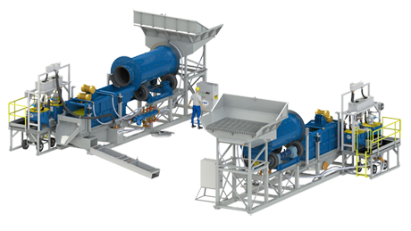

iCON Gold Recovery Applications
iCON Gold Recovery Equipment is used for:
Hard Rock Mining: (No Chemicals Required)
|
Upgrading Concentrates
|
Alluvial Mining, Placer Mining & Dredging
|
Prospecting, Drilling & Bulk Sampling
|
|  | |
Hard Rock Mining Applications
Hard Rock miners around the world have historically recovered as little as 30% of their free gold using mercury amalgamation. The iCON process is being used to scavenge/reprocess old tails without using mercury. These miners are now recovering more gold reprocessing tails with iCON than the original miners recovered.
Hard rock miners must first understand some definitions:
- Free Gold is liberated and depending on its size will be visible in a pan.
- Free Milling Gold is the gold that can be liberated by a standard rotating ball mill.
- Refractory Gold is that which is not recoverable by standard milling and/or chemical processes. This may be ‘entrapped in sulfides'. A standard ball mill may grind your ore to 75 microns. Fine grinding is one process available to liberate refractory gold.
- Gravity Recoverable Gold (GRG) refers to how much gold you can recover based on how fine you are grinding/milling your ore.
The GRG (Gravity Recovery Gold) testing is available at Met-Solve Labs.
The number 1 application for iCON Gold Recovery Equipment worldwide is Hard Rock Mining. The 2tph capacity and the ability to recover fine, flat milled gold are ideal for iCON. The major mines of the world use gravity concentration in their grinding circuits. These gravity concentrators can recover over 90% of the overall production of major/professional mines.
A typical Hard Rock application would involve a crusher and ball mill. The material would be size classified using a cyclone in closed-circuit or simply a screen in semi-closed circuit milling. After the mill the material will pass through the concentrator. The major mines have a ‘recyclic load’. Their processes are designed for the feed to pass through a concentrator multiple times before passing to the tails.
A Hard Rock mine operator may choose to run 1.5 tons per hour of a high grade ore. He may choose to rinse the bowl every 10 minutes. Here he would have run 250 kg and collected 1 kg of concentrate. That is a concentration ratio of 250 to 1.
The concentrate will still need to be upgraded or cleaned to have a sellable product. Some miners around the world are choosing to collect the concentrates from multiple mine sites and clean the cons at a regional secure facility. This is known as ‘pre-concentration’.
When scavenging old mining tails the operator must understand that there is a reason the first miner missed this gold. It may be that it was poorly milled and needs to be re-milled to liberate the gold. In order to recover what another team missed the operator must pay attention to the details and be prepared to adjust their process as required. To understand your or and how much gold you can expect to recover, IGR recommends testing your samples at Met-Solve Labs.
Alluvial Mining, Placer Mining & Dredging
Alluvial miners often ignore the fine gold because sluices and jigs can’t catch it. Depending on the size and shape of your gold a sluice may begin to lose gold at 40 mesh. Some alluvial mining deposits have 90% of their gold finer than this where enhanced gravity, iCON, is the only solution.
Concentrators are being tested on the ends of sluices and dredges. In this case the operation is still capturing the same amount of gold in the sluice. The added value of the concentrator becomes very clear.
After seeing the additional recovery of the concentrator some operators are choosing to redesign their process. An efficient plant design would include a screen (typically 2mm or 10 mesh) where only the coarse material will be routed to a sluice and only the fine material will be routed to your concentrator.
An example of this process is the iCON IGR 1000 Plant.
Upgrading Sluice Concentrates
Any placer miner or dredger understands the vast amount of concentrate you will accumulate. They also understand the incredible amount of work required to clean the cons. Considering that a concentrate is already ‘heavy,’ the operator may run 1 tph through a concentrator. He may choose to rinse the bowl every 6 minutes which means after each 100 kg of feed. Here the i150 will produce 1 kg of cons from 100 kg of feed.
Placer miners also understand the need to classify their concentrate. Let’s say a placer miner is processing ½ inch material. He will have this coarse material and the finest sands in his sluice concentrate. The first step here is to classify or separate this concentrate into at least 2 sizes of material. The iCON IGR 100 Gold Recovery Plant will handle this process for you. The screen will separate you material into 2mm+ and 2mm- sizes. (+/- 10 mesh) The fine material will be pumped to the concentrator and the coarse material will go to the nugget trap.
To give complete confidence all clean-up process should be ran 2 or 3 times. Whether using a table or concentrator the miner must pan the tails to determine when his is satisfied with the process.
You may choose to wash your sluice directly into an iCON Slurry Pump. The pump could then move the material to your screen to greatly reduce the daily labor involved in cleaning your sluice, lifting, storing and transporting the material.
Prospecting / Drilling / Bulk Sampling
The small physical dimensions of the iCON Gravity Concentrator and iPlant make them mobile. The internal structures make them easy to clean from batch to batch or sample to sample. The iCON capacity makes it ideal for processing samples from individual drill holes. Overall iCON mining equipment is ideal for processing any volume from individual drill holes up to bulk sampling at 2 tons per hour.
The iCON IGR 1000 Gold Recovery Plant can process up to 10 tons per hour. It is skid mounted for mobility. For larger volume bulk sampling the IGR 1000 Gold Recovery Plant may be right for you.
Click below for more information on iCON Applications:
iCON Applications - General Mineral Processing
iCON Hard Rock - How the iCON Works - iCON Gold Recovery History